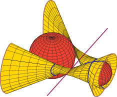

Winter 2012
Math 620: Algebraic Geometry
Homework
Third Homework (Due 23 March 2012):
| Constant Presheaf: |
The constant presheaf C on a topological
space X is defined by
C(U) := K, where Kis any set and U is an open subset of
X. Describe its sheafification, C+.
In particular, give a simple description of
C+(U), for U an open subset of
X. |
| Pages 64 & 66: |
Exercises A, Number 5. Exercises B, Number 1. |
Second Homework (Due 15 February 2012):
| Page 35: |
Numbers 2, 3, 4, 5. |
| Page 63: |
Exercises A, Number 1. |
First Homework (Due Wednesday 1 February 2012):
| Page 24: |
Numbers 2, 3, 6, 7, 8. |
|

|